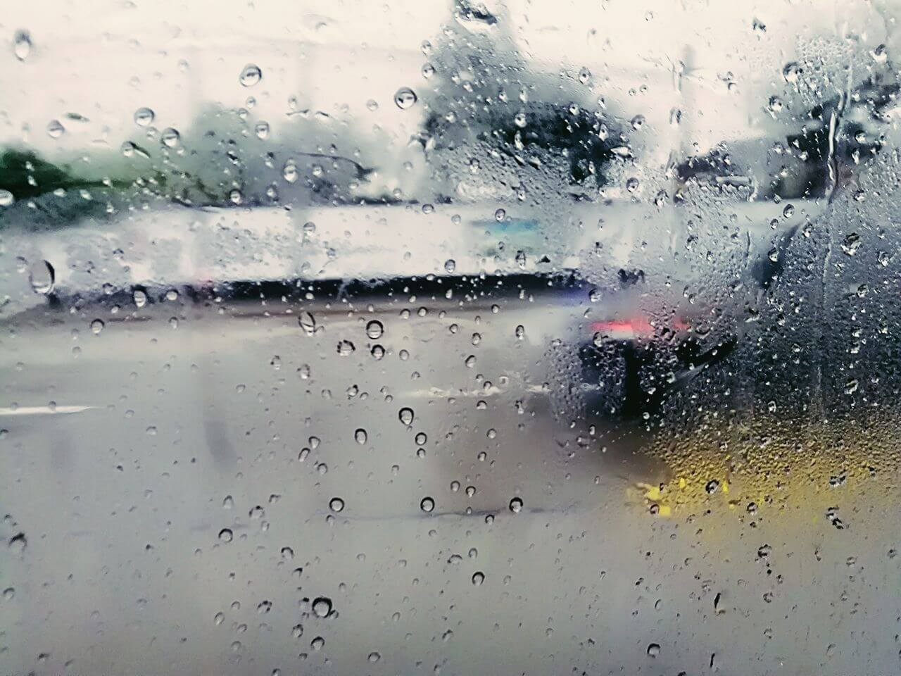
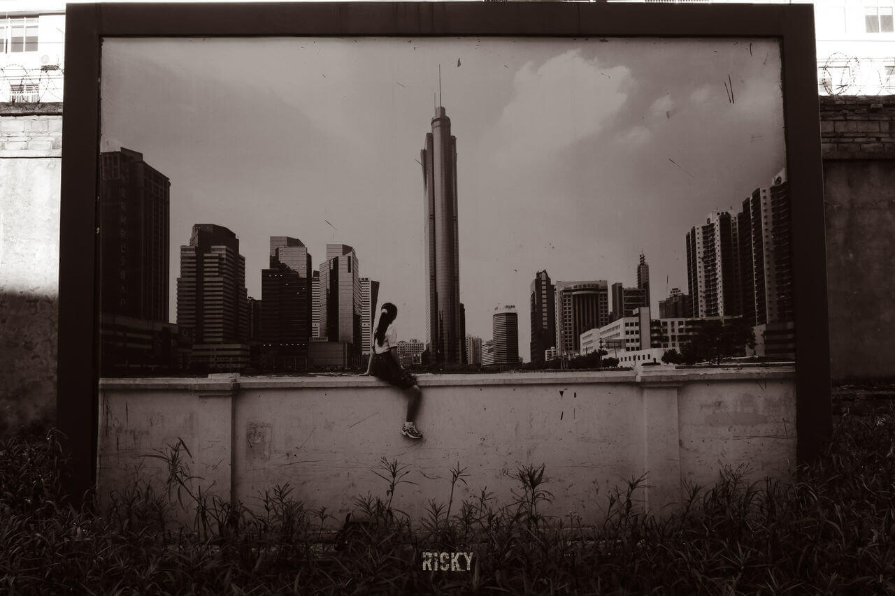
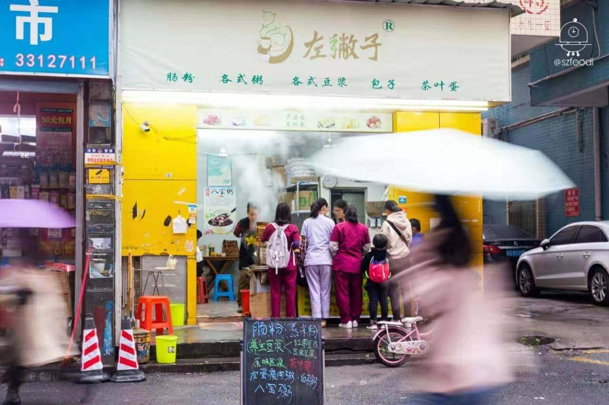
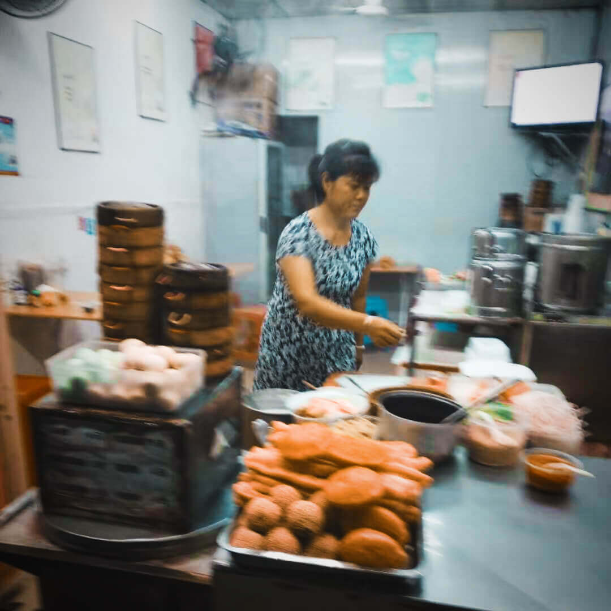

湖南夏天雨水多，这天又是阴天，华姐的手又犯疼了。
与往常一样，华姐今天早起给婆婆和孩子做好了早饭。吃完早饭，华姐就匆匆骑着电瓶车赶去镇上的一家快餐店上班。
每天十个钟，如此生活一天又一天，小心翼翼守护着全家的生活。
2016年，华姐在深圳平湖的一家五金厂打工。厂里给买保险，只有五险没有一金，工资还行。
夏天入职，白班夜班来回倒班。亲情驱散疲惫，予生活以温柔。工作虽累，但还好孩子在身边。
湖南距离广东近，改革开放后，很多湖南老乡都来到深圳讨生活。
2000年华姐从湖南老家来到深圳打工，那时的绿皮火车挤，要差不多10个小时才能到深圳。
第一次来深圳听着火车上老乡的介绍，华姐在一片拥挤和嘈杂声中听到了“那是个大城市”。
来深圳的第二年，华姐就把孩子从湖南老家接到深圳念书了，“这孩子是在深圳长大的”。那时的一切好像都步入正轨，又充满了希望，至少这要比家乡好。

2016年的夏天，在五金厂的日子不紧不慢，11月的一天，华姐上夜班。
华姐在厂里开冲床，冲床是一个危险的工作。机器是吞料的饕餮，饕餮不光吃料，它还吃人，它要求操作工精神必须非常集中。稍有不慎，就会残肢。
打工就是把人规训成机器，拿料、送料，都必须要像机器一样精准。可机器都有劳损的时候，更何况是人呢，倒夜班的时候犯困，可这机器哪知会有黑夜和休息？
那晚夜班，华姐向冲床机送料，“那个机器它就快了，我的手慢了，没拿出来”。
在珠三角地区，没人知道机器吞噬了多少工人的身体。华姐的手就这样“碎”了，同时破碎的还有华姐的生活。
厂里给华姐做了工伤鉴定，8级伤残，其实华姐的工伤够7级了，“那鉴定给人感觉好像我占了便宜似的”。那找律师打官司呢？可没钱怎么请律师，咱们小老百姓也耗不起。
华姐住了院，孩子没人照顾。这从小在深圳长大的孩子，只能转学回老家念书。
两年的住院时间，让华姐结识很多和她一样遭遇的工友。他们一起取暖，一起打气。
一个人一旦有工伤就意味着被淘汰，很多有工伤的工友就不会再有厂要他们，出院后只能回老家，华姐也这样被淘汰了。
华姐在深圳再也进不了厂，面对回老家的窘境，只能再想想办法。

“我们都是病友啊，在一起住院，你传我，我传你，就这样知道了。别人介绍我，我再介绍别人，就这样啊。”
华姐在工伤病友的介绍下认识“左撇子豆浆”。
“左撇子豆浆”是一家开在龙华水尾新村的一家早餐店，老板陈大哥也是一名工伤工人，一次事故让他失去右臂。
因为这样的经历，陈大哥特别关注工伤工人的境遇。陈大哥开店后，生意做得还算红火。他就想把自己的手艺传出去，让更多工伤工人学会这门手艺，好自己开店做买卖，过上有尊严的生活。
后来，陈大哥一直坚持招收免费工伤学员。他有不少学员都开了店，生意不错，人也就看到了希望。
陈大哥的故事在工伤工友圈里，传得广，不少人都知道。华姐听说后觉得挺好的，学门手艺，也许回老家后生计就不用发愁了。

2018年11月，华姐在左撇子豆浆完成了15天的课程。豆浆、肠粉，或者其他早餐，都不在话下。就这样，华姐离开了工作与生活18年的深圳，回到老家，她只带走了伤痛。
回到老家后，华姐开始筹备自己的生意。采购原材料，勘查摆摊地点，一样都不能少。
华姐的老家在农村，到镇上，骑电瓶车也要半个多小时。
她每天4点钟起床准备早餐摊，忙到6点多出发，骑电瓶车驮着待售的早餐出发，到镇上才6点半多一些些。
那时正值冬天，湖南湿冷，冻得华姐手疼。只能忍忍就过去了，因为再疼也要生活。可天冷，豆浆也冷了，这怎么卖？“结果一早上只能卖出去了10多杯”。
10多天过去了，生意都不见起色，这样耗下去也不是办法，华姐就在镇上找工做了。
华姐自己分析说：我们镇地方小，都没有在外面吃早餐的习惯；就算在镇上租店面，也没本钱啊。
陈大哥跟她说，到深圳来开店，大城市人流量大，做生意也容易些。可华姐哪能脱得开身，家里的两个老人，还有两个孩子，都需要她照料。
现在放暑假，孩子都在家。华姐每天10个钟的班，中午还要回家给老人孩子做中饭。
“我一个月才一千五，我老公才三千元，有个儿子上学一年的学费要一万六，还有两个老母亲。”
眼下，华姐自己交着深圳的社保，毕竟到现在为止都在深圳交了11年社保了。
“本来我想要公司里面帮我买，我自己出钱，他都不同意。”
“好多人都说要我跟厂里面打官司，但我也没有什么熟人，又没有多少钱，我怕打不赢就算了，所以放弃了。”
“一个月我自己出钱640多，今年七月份又涨了，涨到700多了。”
做生意没本钱，回深圳打工没厂要。“我的生活真的很困难”，生活把她碾过去，可华姐还是把日子一天天过下来了。
青春献给深圳，但所有苦痛都需要劳动者自己来背负，“也是自己的命了”。
- source： 尖椒部落
- link: https://www.jianjiaobuluo.com/content/107052